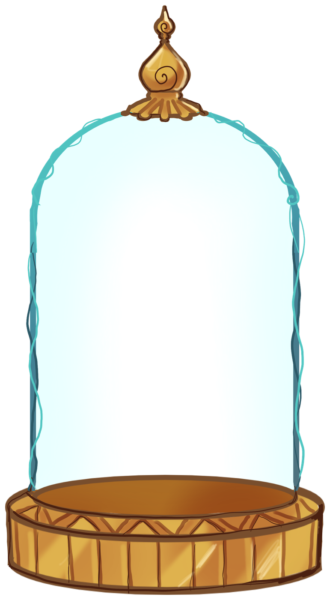

Esta experiência foi pensada para desktop. Abre-a num computador para plantares a tua flor.

O Hortus Sonorum é um jardim sonoro e partilhado. Cada pessoa que passa por aqui transforma-se numa flor, a partir do seu aspeto, e cada flor tem um som associado. Juntas formam uma partitura viva: uma linha percorre o jardim e, quando chega a uma flor, toca o seu acorde.
Uma IA olha para ti através da câmara e reconhece algumas características visíveis. Cada uma decide uma parte da flor:
Criado por Carolina Seixas e José Pereira